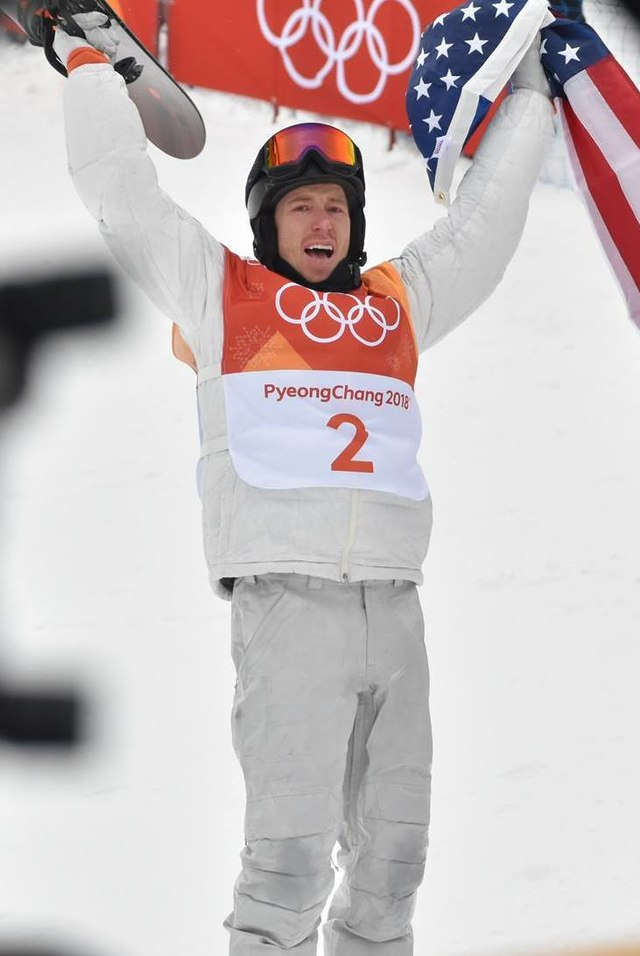
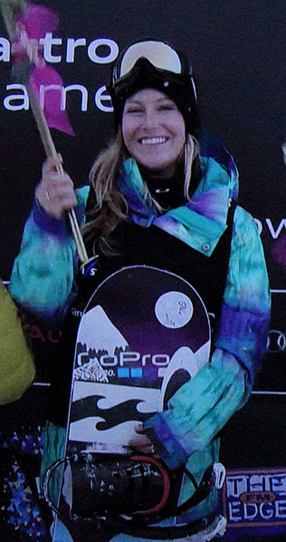
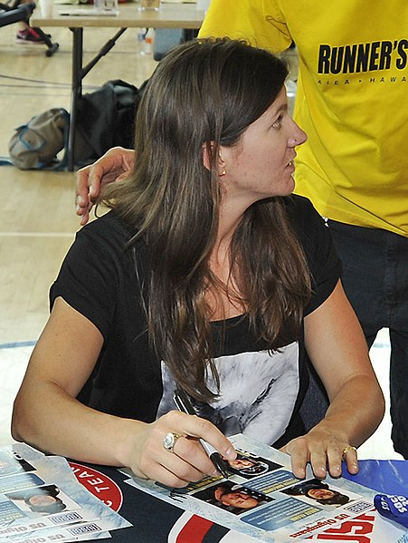

Shaun Roger White (born September 3, 1986) is an American professional snowboarder, skateboarder and musician. He is a three-time Olympic gold medalist. He holds the record for the most X-Games gold medals and most Olympic gold medals by a snowboarder, and has won 10 ESPY Awards.
| Goud | Zilver | Brons |
|---|---|---|
| 3 | 0 | 0 |
Jamie Louise Anderson (born September 13, 1990) is an American professional snowboarder. She won the gold medal in the inaugural Women's Slopestyle Event at the 2014 Winter Olympics in Sochi, Russia and repeated the feat at the 2018 Winter Olympics in Pyeongchang, South Korea, making her the first female snowboarder to win more than one Olympic gold medal. She has won gold medals in slopestyle at the Winter X Games in consecutive years in 2007/8 and 2012/3. She has 11 total medals,including four gold, five silver and two bronze.
| Goud | Zilver | Brons |
|---|---|---|
| 2 | 1 | 0 |
Kelly Clark (born July 26, 1983) is an American snowboarder who won halfpipe gold at the 2002 Winter Olympics. Clark was born in Newport, Rhode Island. She started snowboarding when she was 7 years old, began competing in 1999, and became a member of the US Snowboard team in 2000. On January 25, 2019 at the Winter X Games in Aspen, she announced her retirement from the sport.
| Goud | Zilver | Brons |
|---|---|---|
| 1 | 0 | 2 |